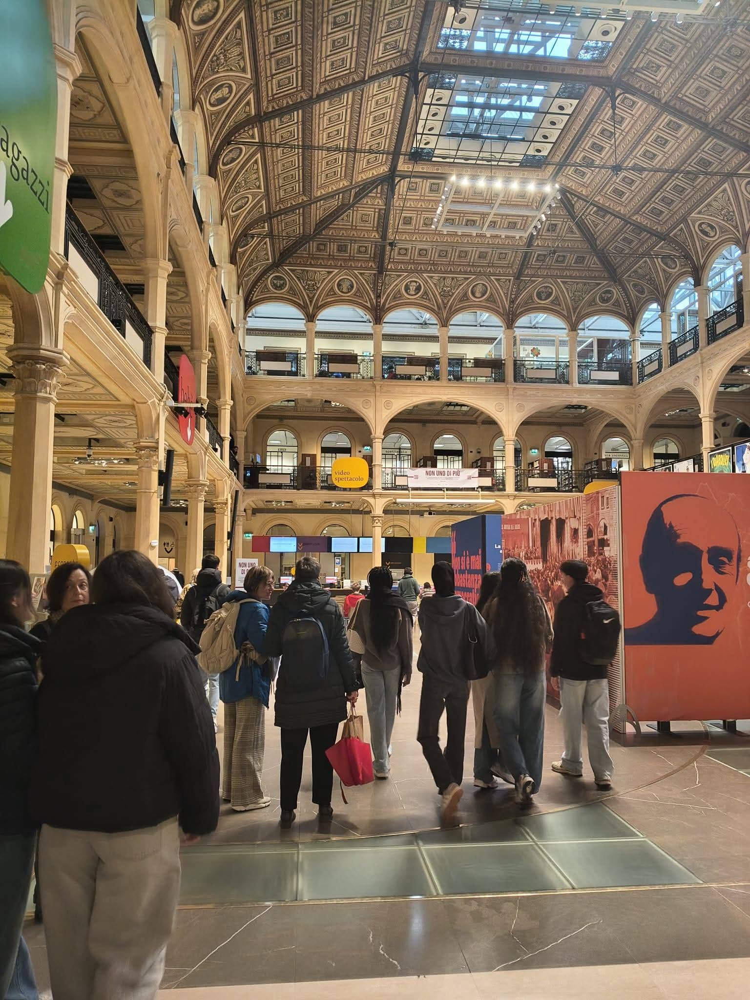
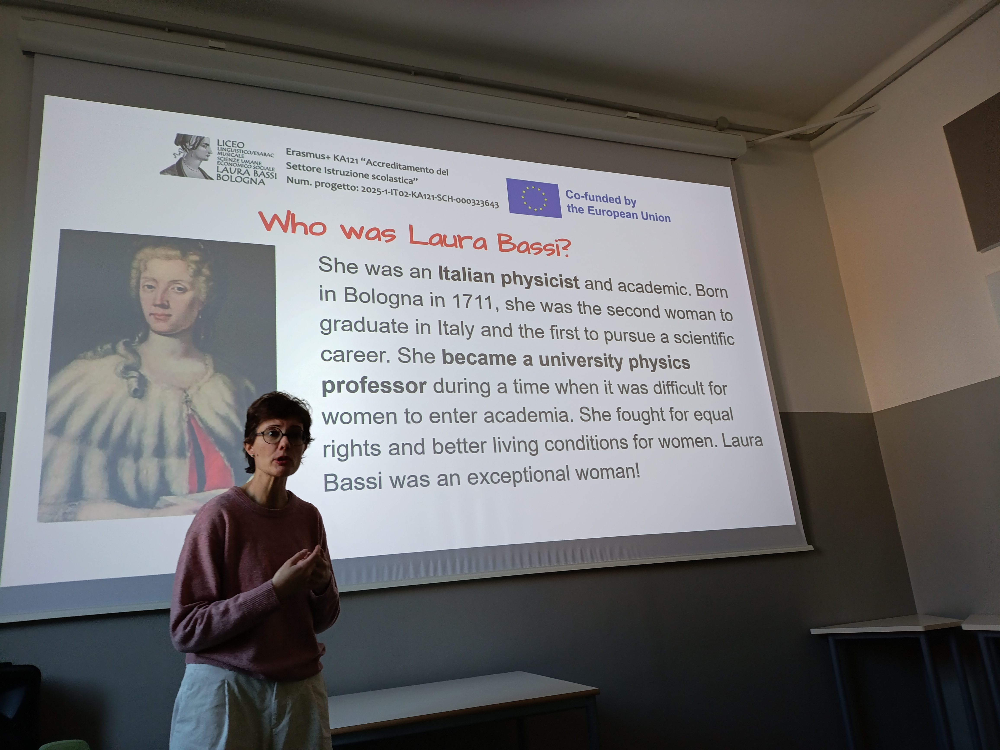
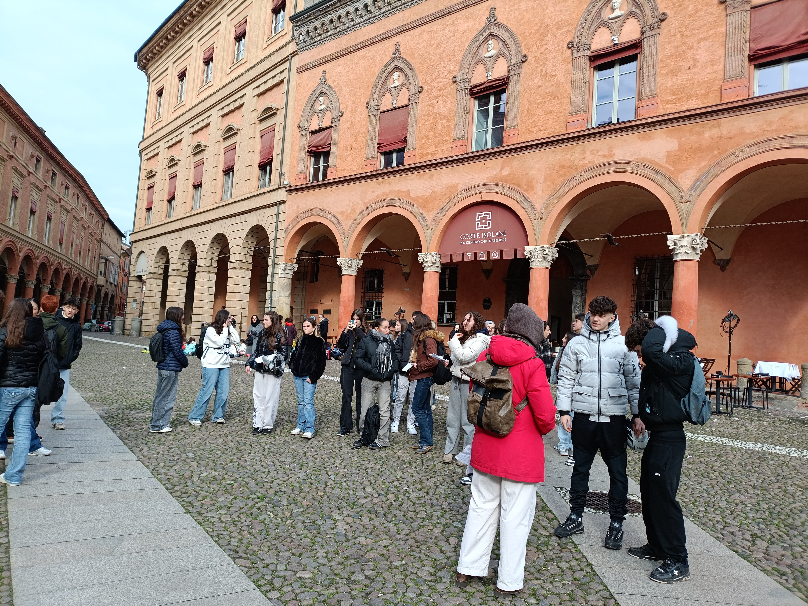
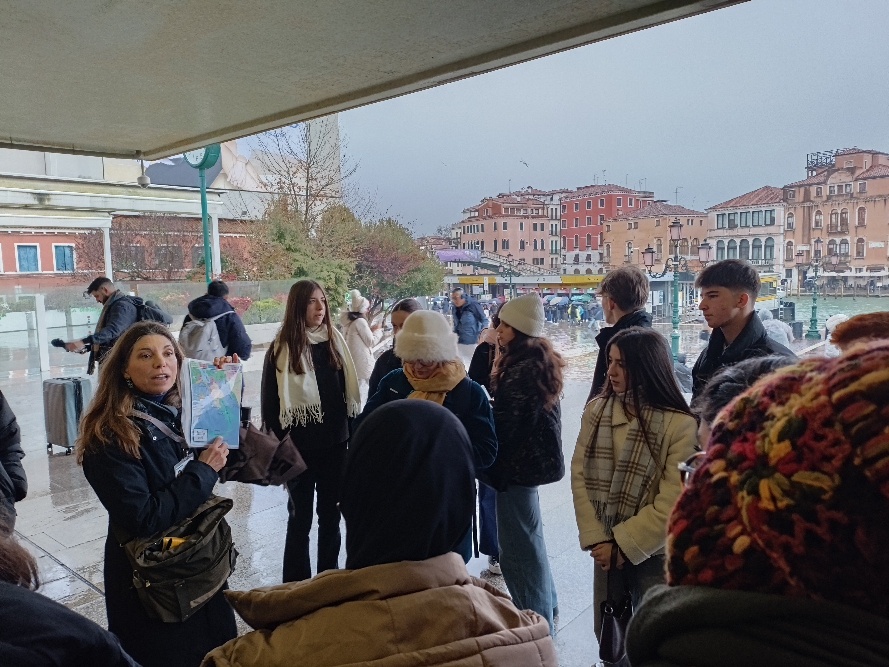

Italy - Bologna (2025-2026)





Σύνοψη Κινητικότητας
Mobility Overview
11 μαθητές και 2 εκπαιδευτικοί συμμετείχαν σε μια εβδομάδα γεμάτη καινοτομία, δημιουργικότητα και κοινωνική προσφορά στην Μπολόνια της Ιταλίας. Μέσα από εκπαιδευτικά εργαστήρια, εθελοντικές δράσεις και πολιτιστικές επισκέψεις, γνώρισαν τις δυνατότητες της τεχνητής νοημοσύνης, καλλιέργησαν την κοινωνική ευαισθησία και ενίσχυσαν την ευρωπαϊκή τους ταυτότητα.
11 students and 2 teachers participated in a week full of innovation, creativity, and community service in Bologna, Italy. Through educational workshops, volunteering activities, and cultural visits, they explored the potential of artificial intelligence, developed social awareness, and strengthened their European identity.
Κύριες Δράσεις:
Key Activities:
- AI Workshop: Διαδραστικά εργαστήρια για την ηθική και υπεύθυνη χρήση του ChatGPT και άλλων εργαλείων τεχνητής νοημοσύνης, με έμφαση στις δυνατότητες και τις προκλήσεις της σύγχρονης τεχνολογίας. Interactive workshops on the ethical and responsible use of ChatGPT and other artificial intelligence tools, focusing on the opportunities and challenges of modern technology.
- Social Service: Εθελοντική προσφορά στην κοινωνική κουζίνα "Cucine Popolari", όπου οι μαθητές συμμετείχαν στην παρασκευή παραδοσιακών τορτελινιών, αναδεικνύοντας τις αξίες της αλληλεγγύης, της συνεργασίας και της κοινωνικής προσφοράς.Volunteering at the "Cucine Popolari" community kitchen, where students participated in preparing traditional Italian tortellini, promoting the values of solidarity, teamwork, and social responsibility.
- Cultural Heritage: Εκπαιδευτικές επισκέψεις στη Βενετία και τη Φλωρεντία, με έμφαση στη γνωριμία με την ιστορία και τους θεσμούς της Γαληνοτάτης Δημοκρατίας της Βενετίας, καθώς και στην καθημερινή ζωή των πολιτών της Φλωρεντίας, αναδεικνύοντας την κοινωνική οργάνωση, την πολιτιστική ανάπτυξη και τον καθοριστικό ρόλο της τέχνης στην εξέλιξη της ευρωπαϊκής κοινωνίας.Educational visits to Venice and Florence, focusing on the history and institutions of the Venetian Republic, as well as the everyday lives of Florence's citizens, highlighting social organization, cultural development, and the significant role of art in shaping European society.
- Academic Exploration: Επίσκεψη στο ιστορικό Πανεπιστήμιο της Μπολόνια, με αφορμή τη γνωριμία με την ευρωπαϊκή πανεπιστημιακή παράδοση και τη διαχρονική αξία της εκπαίδευσης.A visit to the historic University of Bologna, introducing students to the European university tradition and highlighting the enduring value of education.
Μια ξεχωριστή ευρωπαϊκή εμπειρία που ενίσχυσε τις ψηφιακές και κοινωνικές δεξιότητες των μαθητών μας, καλλιεργώντας παράλληλα την ενσυναίσθηση, το πνεύμα συνεργασίας και την ενεργό ευρωπαϊκή πολιτειότητα! A memorable European experience that enhanced our students' digital and social skills while fostering empathy, teamwork, and active European citizenship!